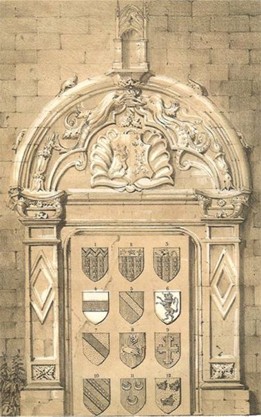

ARMORIAL
Blasons des possesseurs de la terre d’Autrêches.
de gueules à trois pals de vair, au chef d’or qui est chargé d’une bande vivrée de gueules.
d’or à la bande de sable
de gueules à trois pals de vair, au chef d’or qui est chargé de trois étoiles de gueules
Richard Gedoyn, 1662
écartelé d’or et d’azur, à la croix recroisettée de l’un dans l’autre
de gueules à trois pals de vair, au chef d’or qui est chargé d’un lion naissant de sable
Henri-Charles De La Fontaine, 1700 (Beau fils de Anne de GONNELIEU)
bandé d’argent échiqueté de gueules et d’azur de six pièces
d’argent à la fasce de gueules
de gueules à trois croissants montants d’or 2 et 1
de gueules à la bande d’or
d’or à trois hures de sangliers de sable 2 et 1, supports, des licornes
d’argent au lion d’azur
Alliance de la Famille Louvel

Dunois depuis Orléans-Longueville : de France au lambel d’argent en chef et au bâton de même péri en bande.
Dubosc : de gueules à la croix échiquetée d’argent et de sable de trois traits, cantonnée de quatre lions d’or lampassés d’azur.
Parthenay : de gueules au chevron d’argent accompagné de trois besants d’or, 2 en chef, 1 en pointe.
Rely : d’or à trois chevrons d’azur.
Monchy : d’or à trois maillets de gueules.
Lequieu : d’azur au chevron d’or accompagné de trois gerbes de même 2 en chef, 1 en pointe.
Conty d’Amiens : d’or au lion de gueules chargé de trois bandes, aliàs de trois chevrons de vair brochants sur le tout.
Scourjon : d’azur à trois gerbes d’or 2 et 1.
Mareuil : d’azur à la bande d’or accompagné de trois étoiles de même, 2 en chef, 1 en pointe.
Picquet de Dourier : d’azur à la bande cousue de gueules chargée de trois vases d’or ; aliàs le champ d’azur est chargé de six trèfles d’or, 3 en chef, 3 en pointe.
Plustard : d’azur à la bande d’or chargée de trois merlettes de sable.
Morel : d’azur à trois glands de chêne d’or 2 et 1, à la fleur de lis de même en cœur.
Su Souich : écartelé en 1 et 4 d’argent à trois alérions de gueules 2 et 1 ; ay 2 et 3 d’or, à deux bandes de gueules.
Joyeuse : pallé d’or et d’azur de six pièces, au chef de gueules chargé de trois hydres d’or.
Duval de Nampty : de gueules au chevron d’or accompagné en chef de deux fers de lance renversés et en pointe d’un molette, le tout d’or.
Festard : d’argent à trois fasces de gueules.
De Fiennes : d’argent au lion de sable.
De Séricourt d’Esclainvilliers : les seigneurs d’Esclainvilliers portent comme Hangest qui est : d’argent à la croix de gueules chargée de cinq coquilles d’or.
De Choiseul : d’azur à la croix d’or accompagnée de 18 billettes de même, 10 dans le cantons du chef et 8 dans ceux de la pointe.
Saisseval : d’azur à deux bars adossés d’argent.
Sacquespée : de sinople à l’aigle d’or tirant à demi une épée d’argent garnie d’or, d’un fourreau de sable à bouterolle d’or.
Dumaisniel : d’argent à deux fasces de gueules, chargées chacune de trois besans d’or.
Lefournier de Wargemont : d’argent à trois roses de gueules 2 et 1.
De Belleval : de gueules à la bande d’or accompagnée de sept croix recroisettées de même, 4 en chef 3 en pointe.
De Chérie : d’or à deux lions affrontés de sable soutenant un cœur de gueules.
De Haricourt : d’argent à la croix de gueules chargée de cinq coquilles d’argent.
Leroy de l’Argillière : d’azur à l’aigle éployée d’or accompagnée de trois roses de même, 2 en chef 1 en pointe.
De Cacheleu : d’azur à trois pattes de loup d’or 2 et 1.
De vandeuil : d’azur au lion naissant d’or.
De Guillebon : d’azur à la bande d’or accompagnée de trois besants de même, 2 en chef, 1 en pointe.
De Trécesson : de gueules à trois chevrons d’hermines.
De la Myre : écartelé 1 et 4 d’azur à 3 alérions d’or diadémés de gueules 2 et 1 ; 2 et 3 d’or à la bande de gueules accompagnée en chef de trois merlettes de sable et en pointe d’un tourtereau d’azur.
Du Tremblay : d’or au griffon de sable, en chef d’azur.